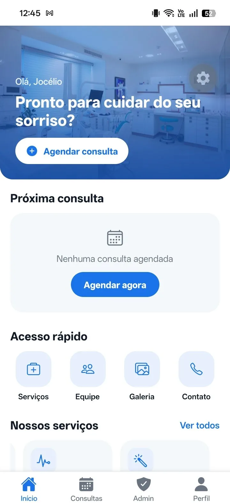
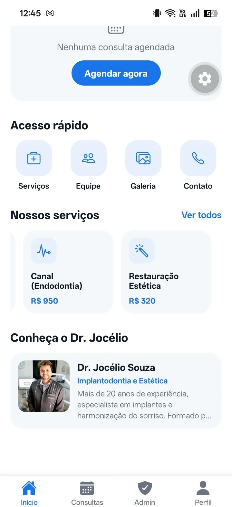
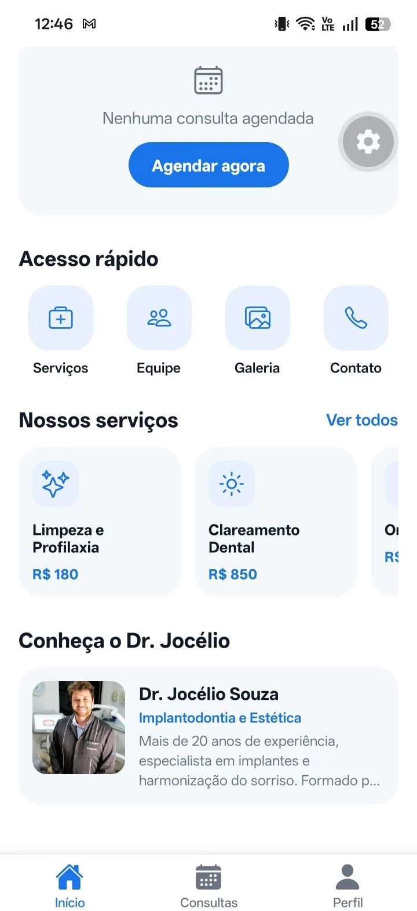

Confiança
Diagnóstico honesto e plano de tratamento explicado sem termos complicados.
Clínica odontológica em Juazeiro do Norte · Ceará
Conheça uma experiência odontológica que combina atendimento profissional, tecnologia e cuidado em cada detalhe.
A clínica
A Dr. Jocélio nasceu para oferecer, em Juazeiro do Norte, um atendimento odontológico em que técnica e acolhimento caminham juntos. Cada etapa do tratamento é explicada com clareza, para que o paciente decida com segurança.
Nossa estrutura foi organizada para receber você com conforto, com equipamentos adequados a cada procedimento e uma rotina rigorosa de biossegurança.
Diagnóstico honesto e plano de tratamento explicado sem termos complicados.
Atendimento atento ao que você sente, do primeiro contato ao retorno.
Recursos atuais de diagnóstico e de execução, aplicados ao que cada caso pede.
Ambientes organizados, higienizados e preparados para cada tipo de procedimento.
Campos reservados para a clínica preencher. Estas informações não constam no material recebido e não foram inventadas:
Tratamentos
Os tratamentos abaixo são os identificados no aplicativo oficial. A estrutura da página permite acrescentar novos procedimentos a qualquer momento — basta duplicar um bloco no arquivo index.html.
Tratamento do interior do dente quando a polpa é atingida por cárie profunda, trauma ou infecção, com o objetivo de eliminar a dor e preservar o dente na boca.
[VALOR A CONFIRMAR PELA CLÍNICA]
Recomposição de dentes fraturados, desgastados ou afetados por cárie com materiais que reproduzem a cor e o brilho natural do esmalte.
[VALOR A CONFIRMAR PELA CLÍNICA]
Remoção de placa bacteriana e tártaro, com orientação de higiene personalizada. É o procedimento de manutenção que sustenta o resultado de qualquer tratamento.
[VALOR A CONFIRMAR PELA CLÍNICA]
Clareamento da cor dos dentes com protocolo supervisionado, indicado após avaliação que descarta cáries, sensibilidade e outras condições que precisam de tratamento antes.
[VALOR A CONFIRMAR PELA CLÍNICA]
Duplique este bloco em index.html para publicar Implantodontia, Ortodontia, Prótese ou qualquer outro tratamento confirmado pela clínica.
Os valores exibidos no aplicativo não são publicados automaticamente neste site. Cada procedimento depende de avaliação individual, e nenhum resultado é garantido. Este conteúdo tem caráter informativo e não substitui a consulta.
O profissional
Implantodontia e Estética
Cirurgião-dentista responsável pela clínica, o Dr. Jocélio Souza atua em Juazeiro do Norte com foco em reabilitação e em resultados naturais. O aplicativo oficial da clínica apresenta mais de 20 anos de experiência e atuação em Implantodontia e Estética.
O atendimento é conduzido caso a caso: primeiro o diagnóstico, depois o plano explicado com clareza, e só então o tratamento — sempre com acompanhamento próximo.
Galeria
Esta galeria está pronta para receber fotografias reais. Por decisão editorial — e por respeito à privacidade dos pacientes — nenhuma imagem clínica foi gerada ou simulada aqui.
Aplicativo oficial
Desenvolvemos um aplicativo próprio para que o paciente acompanhe tudo sem precisar ligar: agendamento, consultas marcadas, histórico, tratamentos, equipe, galeria e contato — tudo na mesma identidade visual desta página.
Solicite sua avaliação direto pelo aplicativo.
Veja o que está marcado, com data e horário.
Consulte os atendimentos já realizados.
Tudo o que a clínica oferece, em um só lugar.
WhatsApp, endereço e seus próprios dados.
Aplicativo disponível em breve. Os botões estão preparados para receber os links oficiais de download assim que a publicação for concluída.



A área administrativa existente no aplicativo é de uso interno da clínica e não faz parte das funcionalidades oferecidas ao paciente.
Pacientes
[DEPOIMENTO A AUTORIZAR — insira aqui a avaliação real do paciente, com o nome ou a identificação que ele autorizou.]
[DEPOIMENTO A AUTORIZAR — insira aqui a avaliação real do paciente, com o nome ou a identificação que ele autorizou.]
[DEPOIMENTO A AUTORIZAR — insira aqui a avaliação real do paciente, com o nome ou a identificação que ele autorizou.]
Nenhum depoimento foi criado por este projeto. Esta seção só deve ser publicada com avaliações reais de pacientes e com autorização expressa de uso de imagem e texto, conforme a LGPD.
Fale com a nossa equipe pelo WhatsApp e agende sua avaliação. Vamos entender o seu caso e explicar o tratamento com calma, sem compromisso.
Não exibimos agenda automática: horários e confirmações são sempre validados por uma pessoa da equipe.
Contato
Mapa pronto para incorporação
O endereço informado é apenas Avenida Carlos Cruz, sem número, bairro ou CEP. Para publicar o mapa, cole aqui o link do Google Maps da clínica — o bloco já está preparado para recebê-lo.
Abrir a Avenida Carlos Cruz no Google MapsPreencha os campos e o botão abrirá o WhatsApp oficial com a sua mensagem já escrita. Nenhum dado é armazenado neste site.